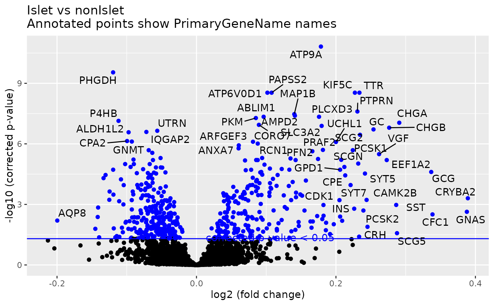

volcano_plot() generates a volcano plot to visualize results
from differential expression analysis stored in a data frame.
Use this function directly if differential expression results are in a
separate data frame and not an spe object
Helper function for volcanoPlot_DiffExSpe.R; use volcanoPlot_DiffExSpe.R
if differential expression results are in an spe object.
-log10(p-value) vs. log2(fold change)
volcano_plot(
diffex.spe,
logFC_colname,
pval_colname,
pval_corrected = TRUE,
log_transformed = TRUE,
title,
thresh = 0.05,
sigLabel_colname
)A SpatialExperiment object containing differentail
expression results in rowData
column name in differenital expression results that represents log10 fold change
column name in differential epxression results that represents the p-value to be plotted
Boolean indicating whether pval_colname represents the corrected p-value or not
set to TRUE if data is log transformed
title for the plot
Threshold for p-value to be used to annotate significant results on the plot
Either a a vector with labels or a string (Example: "Gene") that is the column name in differential expression results that should be used for labeling significant results on the plot.
ggplot Volcano plot
data(smallPancData)
data(pancMeta)
data(protMeta)
pooledData <- dplyr::bind_cols(smallPancData)
pooled.panc.spe <- convert_to_spe(pooledData,
pancMeta,
protMeta,
feature_meta_colname = "pancProts",
sample_id = ""
)
#> Spatial object created without spatial coordinate
#> column names provided. Distance based analysis will not be enabled.
#> Note: Only mapping metadata for 2986 features out of 3000 data points
diffex.spe <- calc_spatial_diff_ex(pooled.panc.spe,
category_col = "IsletOrNot"
)
#> Warning: Partial NA coefficients for 2 probe(s)
#> We found 0 features with a logFC greater than 1 and
#> an ajusted p-value less than 0.05
volcano_plot(diffex.spe,
sigLabel_colname = "PrimaryGeneName",
title = "Islet vs nonIslet"
)
#> Warning: Removed 2 rows containing missing values or values outside the scale range
#> (`geom_point()`).
#> Warning: Removed 2 rows containing missing values or values outside the scale range
#> (`geom_text_repel()`).
